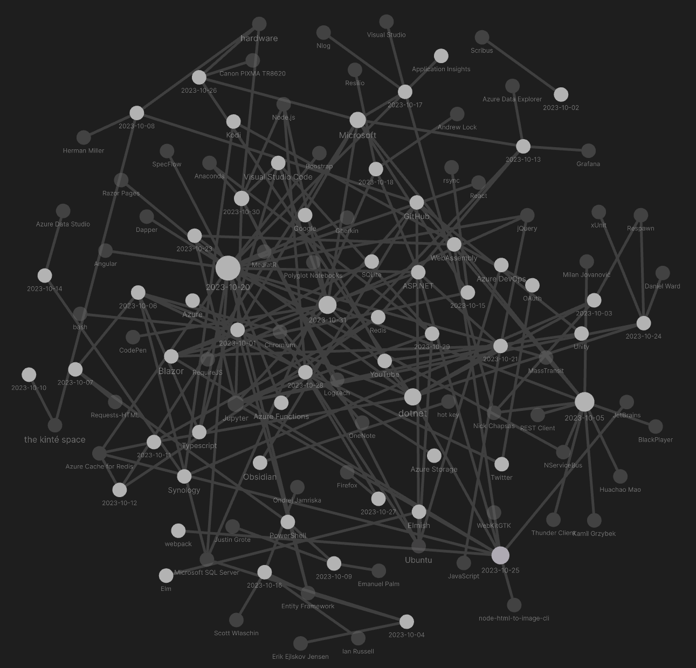

studio status report: 2023-10
month 10 of 2023 was about finding foundational bugs 🐛 in Songhay.Player.ProgressiveAudio (and finally using Redis Cache)
No funny banter this month 😐 Issues #13 and #14 are currently holding up the release of the b-roll audio player. These challenges have emerged in a month that looks like this:

The major progress of this month was day-job related: I architected an app feature requiring Azure Cache for Redis. This work bled into weekends 😵 but was well worth the desired accomplishment! Selected notes below should touch upon this grueling journey:
[[Azure Cache for Redis]]: IDistributedCache does not support SCAN and MGET but is still needed
The following table summarizes the [[Redis]] commands the #day-job needs:
| [[Redis]] command | IDC method | ICM/ID/IS method |
|---|---|---|
GET[📖 docs ] |
GetStringAsync[📖 docs ] |
StringGetAsync(string)[🔗 GitHub ] |
DEL1[📖 docs ] |
RemoveAsync[📖 docs ] [🔗 GitHub ] |
KeyDeleteAsync[🔗 GitHub ] |
SET[📖 docs ] |
SetStringAsync[📖 docs ] |
StringSetAsync[🔗 GitHub ] |
MGET[📖 docs ] |
🚫 | StringGetAsync(string[])[🔗 GitHub ] |
SCAN[📖 docs ] |
🚫 | KeysAsync[🔗 GitHub ] |
HGET[📖 docs ] |
🚫 | HashGetAsync[🔗 GitHub ] |
1There is no MDEL command as the DEL command supports multiple optional keys.
GetStringAsync and SetStringAsync have an advantage over the ID equivalents because [[Microsoft]] abstracts away the ceremony around setting expiration dates.
welcome to Friday the 13th 🕸: when IDistributedCache writes a string into [[Redis]], it is actually writing a hash 😠 #day-job
In order to support [[Redis]] cache entry expiration ❓ [[Microsoft]] is entering hashes on our behalf when we expect strings to be written! This means that:
[!warning]
MGETcannot be used withIDistributedCache[[Redis]] cache entries because these entries are hashes. There are no [[Redis]] commands that are the hash-equivalent ofMGET.
It is an error to assume that HMGET [📖 docs ] is the equivalent of MGET. The hash getters of [[Redis]] are more concerned with returning multiple values from a single hash entry. I see no concern for returning an array of arrays: multiple hash values.
[[Songhay Player - Progressive Audio (F♯)]]: progressive audio features are actually needed for the progressive audio player 😐
The previous progressive audio player leveraged audio5js [🔗 GitHub ] which correctly uses the canplay event [🔗 GitHub ] while my design currently does not—not even incorrectly 😐
[!error] Currently the [[Songhay Player - Progressive Audio (F♯)]] does not use the
canPlayevent [📖 docs ] which means large files that are not sufficiently downloaded fail to play (without any console error messages).
These are the minimum features needed based on the canPlay event:
- [x] the player controls should be disabled until the
canPlayevent fires orHTMLMediaElement.readyStateis greater than2(HAVE_FUTURE_DATAorHAVE_ENOUGH_DATA[📖 docs ]) - [x] when a playlist item is clicked the player controls should be disabled and the
canPlayevent should fire again and/orHTMLMediaElement.readyStateis checked again - [x] the playlist should be disabled until the current track
canPlayand/orHTMLMediaElement.readyStateis greater than2 - [x] data should be written to the console to track states (the
loadstartevent [📖 docs ] and theloadedmetadataevent [📖 docs ] should be tracked here)
Issue #14 is open for this.
design critique
Because I decided 😐 to use a fucked up polling strategy in ProgressiveAudioUtility.startPlayAnimation I allowed myself to not care about HTMLMediaElement.readyState. I now consider this decision insane.
- [x] #14 add
PlayerAudioLoadStartEventandPlayerAudioCanPlayEventmessages 🔨🐎 - [x] #14 add
ProgressiveAudioModel.canPlayboolean 🔨 - [x] #14 remove the polling strategy in
ProgressiveAudioUtility.startPlayAnimation🔨 - [x] #14 remove
ProgressiveAudioUtility.toggleElementEnabled🔨🔥 - [x] #14 use
ProgressiveAudioModel.canPlayboolean to drive the application ofpointer-events: nonefor the playlist 🔨🐎💄
three new [[Jupyter]] notebooks to study [[JavaScript]] #day-job
- [[dotnet|.NET]]:
IDictionary<TKey,TValue>and JavaScript’sMap[🔗 GitHub ] - JavaScript date math [🔗 GitHub ]
- [[jQuery]]:
.serializeArrayandFormData
“How to list all routes in an [[ASP.NET]] Core application” #day-job
https://www.meziantou.net/list-all-routes-in-an-asp-net-core-application.htm
var builder = WebApplication.CreateBuilder(args);
var app = builder.Build();
app.UseRouting();
if (app.Environment.IsDevelopment())
{
app.MapGet("/debug/routes", (IEnumerable<EndpointDataSource> endpointSources) =>
string.Join("\n", endpointSources.SelectMany(source => source.Endpoints)));
}
app.Run();
the [[Daniel Ward]] presentation on [[xUnit]]

xUnit Expanded – Better Testing With xUnit by Daniel Ward
The big news from this [[Daniel Ward]] presentation is the surprise about [[xUnit]] collections:
How does xUnit.net decide which tests can run against each other in parallel? It uses a concept called test collections to make that decision.
By default, each test class is a unique test collection. Tests within the same test class will not run in parallel against each other.
Also see “Shared Context between Tests” 📖
[!warning] The [[xUnit]] documentation makes no mention of ordered testing.
[[Daniel Ward]] made no mention of ordered testing which may suggest that ordered tests are frowned upon or considered obsolete in the context of mocking and using containers with [[Respawn]].
I need to revisit this [[Daniel Ward]] video again for more detail #to-do
[[Microsoft]]: “William A. Adams, Software Engineer, DEI Innovator, and Philanthropist”

William A. Adams, Software Engineer, DEI Innovator, and Philanthropist
sketching out development projects
The current, unfinished public projects on GitHub:
- replace the Angular app in
http://kintespace.com/player.htmlwith a Bolero app 🚜🔥 - finish the “
SonghayCore📦✨ release 6.0.5” project - start the “
Songhay.Publications.Models6.0.0” 📦🚀 project
The proposed project items:
- add kinté space presentations support to
Songhay.Player.YouTube🔨 🚜✨ - generate Publication indices from SQLite for
Songhay.Publications.KinteSpace - generate a new repo with proposed name,
Songhay.Modules.Bolero.Index✨🚧 and add a GitHub Project - switch Studio from Material Design to Bulma 💄 ➡️ 💄✨